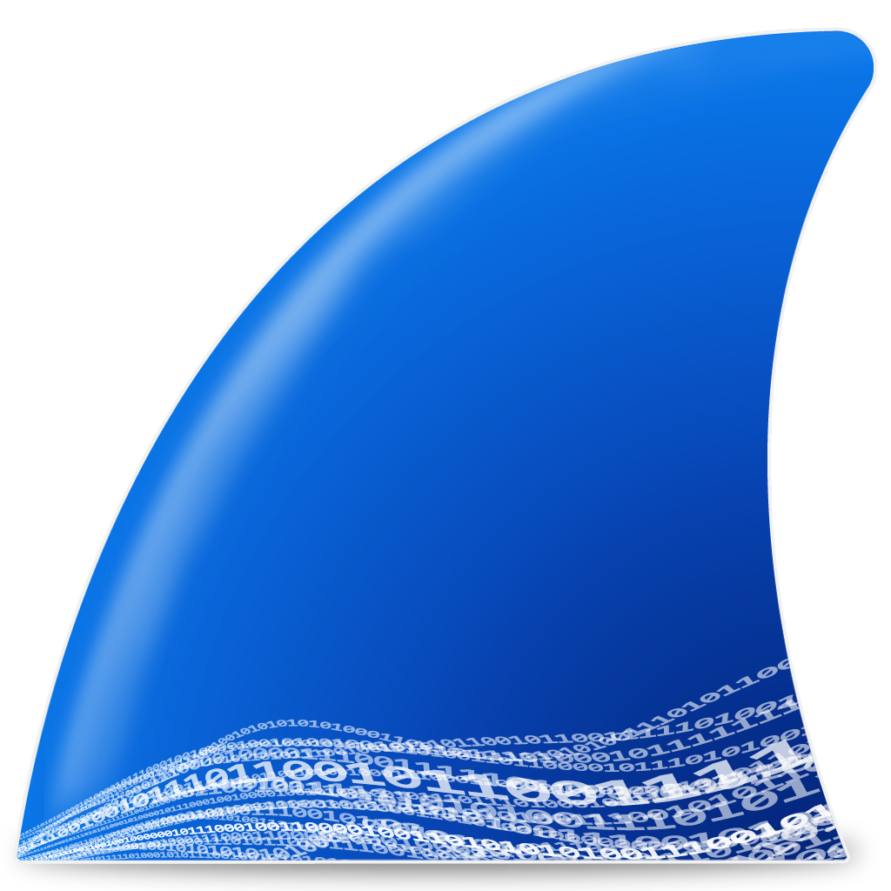
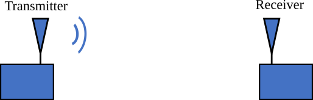
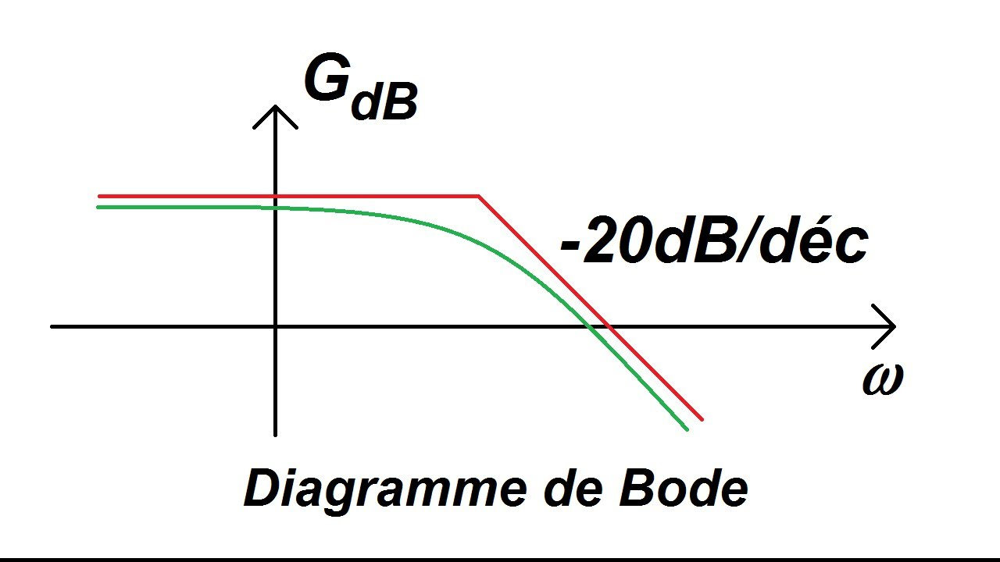
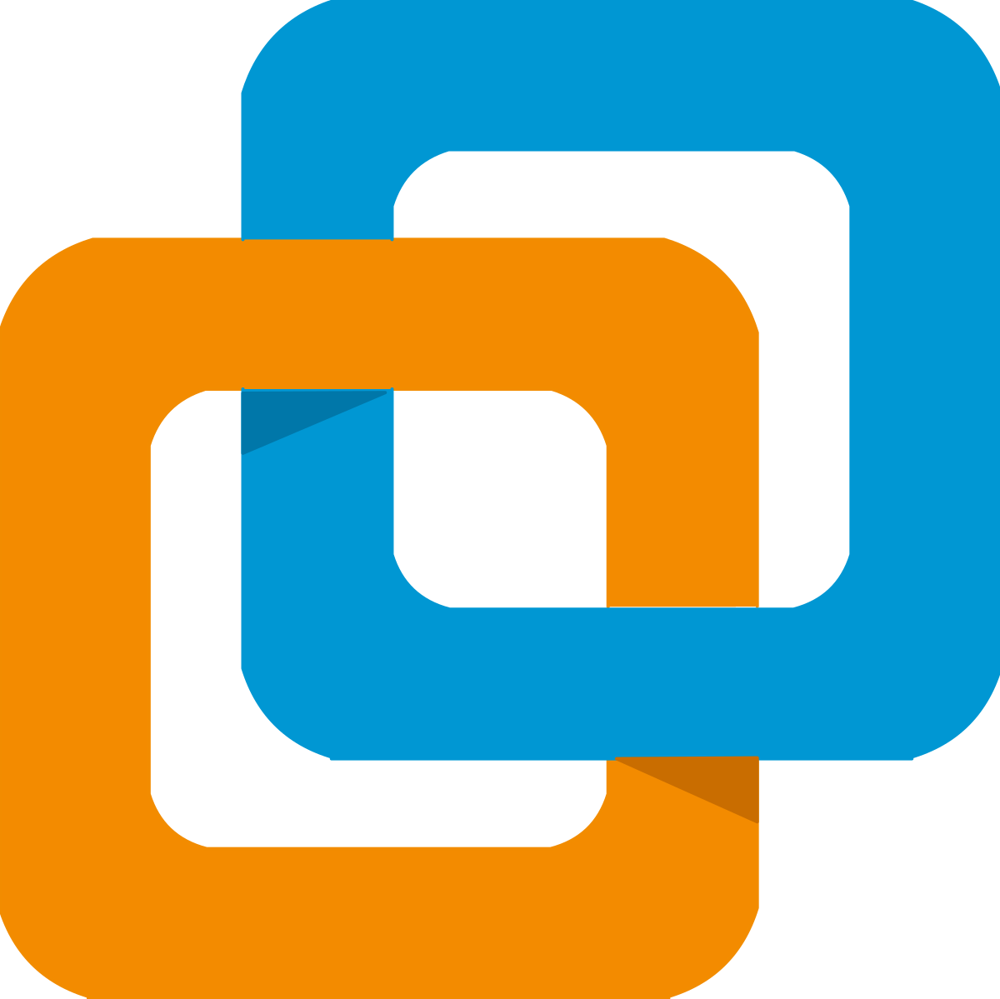
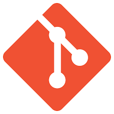
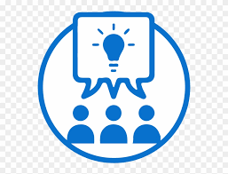
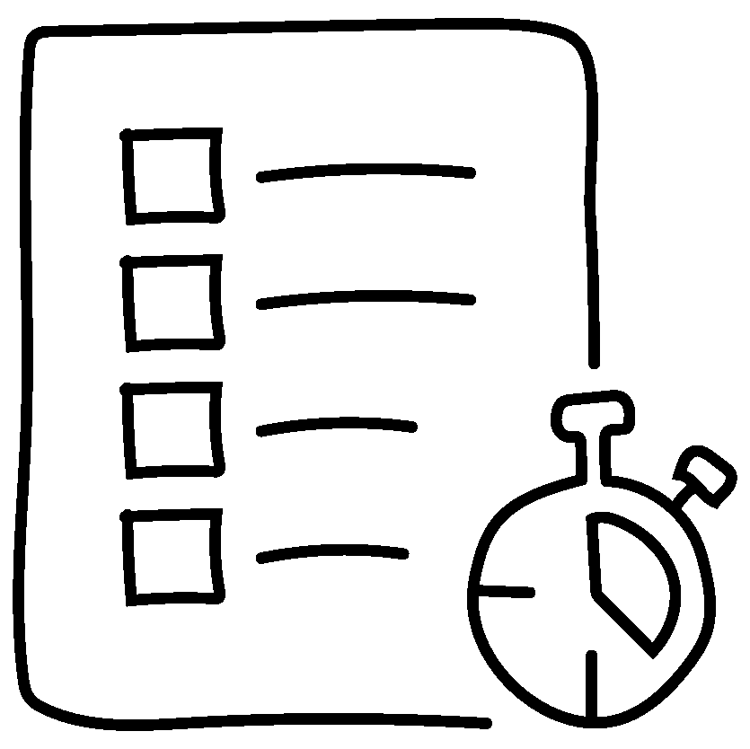

Mes compétences techniques et qualités
Réseaux

Cisco Packet Tracer
Simulation et conception de réseaux, test de configurations avant déploiement en environnement réel.
Switchs & Points d'accès WIFI
Configuration pratique d'équipements réseau professionnels.

Wireshark
Analyse de trames réseau.

Protocoles (HTTP, DNS, DHCP)
Compréhension des protocoles réseau essentiels et de leur fonctionnement.
Télécommunications

Théorie et analyse des signaux
Analyse temporelle et fréquentielle (séries et transformée de Fourier) et traitement numérique (théorème de Shannon). Application sur Matlab pour l'étude de signaux (PWM, méthode de Monte-Carlo, projets SAE22).
Mesures et analyse spectrale
Utilisation experte d'analyseurs de spectre et d'oscilloscopes (fonctions FFT). Paramétrage avancé (SPAN, RBW, VBW), exploitation des spectres (OBW, DSP) et mesure de la qualité de réception (SNR).

Ingénierie des systèmes de transmission
Réalisation de bilans de liaison, modélisation mathématique et hypsogrammes. Manipulation des échelles logarithmiques (dB, dBm) et analyse des circuits et réseaux linéaires (lois de Kirchhoff, régimes transitoires).

Filtrage et conditionnement de signal
Caractérisation de filtres (passe-bas, passe-haut, passe-bande et réjecteur) et construction de diagrammes de Bode en module et en phase.
Téléphonie

Mise en place d'équipements
Mise en place de téléphones de bureau, adaptateurs ATA, bornes DECT et softphones.
Configuration de services
Configuration de lignes SDA, conférences, groupes d'appels, messagerie Zimbra.
Systèmes & Administration
Différents OS (Windows, Linux)
Administration et configuration de systèmes Windows et Linux, gestion des utilisateurs et des permissions.

Bash & écriture de scripts Shell
Automatisation de tâches répétitives et création de scripts pour l'administration système.

Virtualisation (VirtualBox & VMware)
Création et gestion d'environnements virtualisés pour les tests et le développement.
Développement & langages de programmation

Python
Développement de scripts d'automatisation réseau et d'outils d'analyse de données.

HTML/CSS
Création de sites web statiques et interfaces utilisateur responsive.

SQL
Manipulation et interrogation de bases de données relationnelles.

C
Programmation système et compréhension des concepts bas niveau.

Git
Gestion de versions et collaboration sur des projets de développement.
Langues

Anglais - Niveau B2
Capacité à lire la documentation technique en anglais et à échanger dans un contexte professionnel international.

Espagnol - Niveau B1
Compréhension orale et écrite en espagnol.

Italien - En cours d'apprentissage
Apprentissage actuel de l'italien pour élargir mes compétences linguistiques.
Qualités personnelles
Curiosité
J'essaye d'être toujours à l'affût des nouvelles technologies et innovations dans le domaine de l'informatique. J'aime explorer, comprendre et apprendre de nouveaux concepts.

Esprit d'équipe
Je suis capable de collaborer efficacement sur des projets de groupe, partager mes connaissances et m'adapter à l'équipe pour atteindre des objectifs précis.
J'ai pu développer cette qualité lors de projets académiques mais surtout au niveau de la gestion d'entreprise, d'équipes d'intervention dans un jeu vidéo.

Rigueur et organisation
J'essaye de faire attention aux détails et je structure ma manière de travailler, ce qui peut-être très utile dans la configuration réseau et la résolution de problèmes techniques.